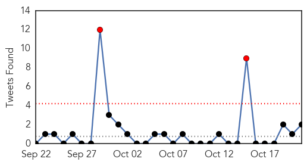

Unknown
30-Day Web Trend
30-Day Twitter Trend
2 alerts, 0 warnings

Article Locations


Article Confidences

Top Articles:
- 0.992
- Kingdom, US join forces to defeat MERS
- 0.972
- Shigella Bacteria Infections From San Jose Seafood Restaurant Rise « CBS San Francisco
- 0.964
- Lack of screening of illegal workers handling food may be cause of KL typhoid outbreak: Minister, SE Asia News & Top Stories
- 0.927
- The typhoid tide- Nepali Times
- 0.887
- No reason to panic over typhoid outbreak – Malaysian health ministry
- 0.817
- Finding support for Q Fever
- 0.739
- Public should not panic over typhoid outbreak — subramaniam – BorneoPost Online
- 0.705
- Deadly clashes in Congo Brazzaville as protesters defy crackdown
- 0.683
- After typhoid alert, ministry says will shutter dirty eateries
- 0.640
- Where death stalks our young children
- 0.633
- Shigella Outbreak Shuts Down San Jose’s Mariscos San Juan Restaurant
- 0.628
- About 40 pupils struck with suspected norovirus after St William’s Grovely camp at YMCA Camp Warrawee
- 0.580
- Health Ministry Renews Focus on Infection Control and Sanitation
- 0.564
- Group Stereotypes Negatively Impact Health Care; Prejudice Leaves Some Patients Feeling Vulnerable
- 0.511
- Ukraine launches delayed polio vaccination drive
- 0.503
- Buffett behind insurer IAG's u-turn?
Top Tweets:
- 0.592
- A5 CDC recommends a yearly flu vaccine as the first and most important step in protecting against flu viruses IIPWChat
- 0.572
- RT: World Health Organization chief says US Saudi Arabia discussing MERS vaccine - The Times of India https://t.co/n2sVCno2q2